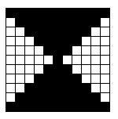

Soit un tableau carré (à n lignes et n colonnes) d’éléments de type Couleur dont les valeurs possibles sont ‘noir’ et ‘blanc’. Au départ, toutes les cases du tableau sont initialisées à ‘blanc’. Écrire un module qui reçoit ce tableau en paramètre et noircit les cases de façon à obtenir un motif en forme de sablier comme le suggère l’exemple ci-dessous.
N.B. : l’exemple est donné pour un tableau 11 x 11, mais votre algorithme doit fonctionner quelle que soit la taille du tableau.
